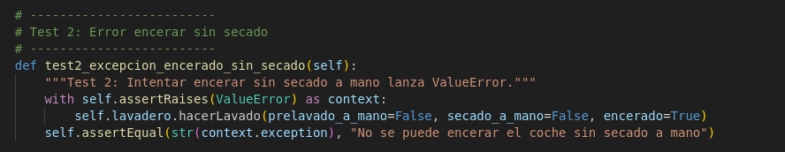
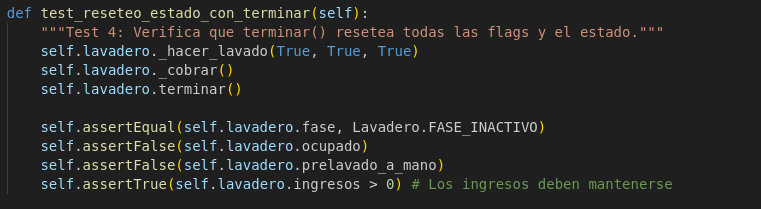
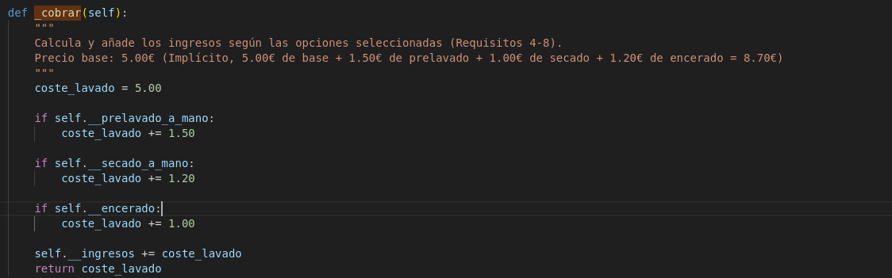
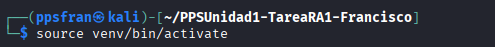
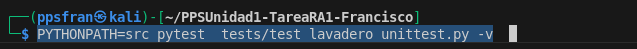

2. Realización de los test unitarios de la aplicación.
Código utilizado en los unnitest:¶
- Test 1: este el código utilizado en el test 1

- Test2:este el código utilizado en el test 2

- Test3:este el código utilizado en el test 3

- Test4-8:este el código utilizado en el test 4-8

- Test9-14:este el código utilizado en el test 9-14

Apartado 3. A partir de los resultados de los tests, se deben corregir también los problemas encontrados en el código hasta que todos los tests sean correctos.¶
- El primer error que me he encontrado es en archivo unittest.py es el siguiente:
- Causa El test llama a _hacer_lavado el método correcto que hay que poner es sin guiones bajos hacerLavado:

- Solución: En el test test_lavadero_unittest.py hay que cambiar lo siguiente:

- El segundo es error en el precio incorrecto:
- Causa: El test espera que un lavado con prelavado a mano y secado a mano costara 7,50 €, pero la función _cobrar() estaba sumando mal y devolvía 7,70 €.

- Solución: Corregir los valores de la suma como vemos en la siguiente imagen:

- El tercer error hay un error lógico en la secuencia de fases:

- Solucción: El flujo respete prelavado, rodillos, secado y encerado según las opciones seleccionadas:

Para ejecutar las pruebas hay que hacer los siguientes pasos:¶
- Hay que activar primero crear el ven y despues activarlo


-
Ejecutar las pruebas:
PYTHONPATH=src pytest tests/test_lavadero_unittest.py -v -
Al terminar de corregir los fallos y a la hora de hacer los test tiene que salir que estan todas pasados: